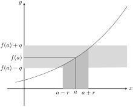

Skip to main content\(\newcommand{\N}{\mathbb N} \newcommand{\Z}{\mathbb Z} \newcommand{\Q}{\mathbb Q} \newcommand{\R}{\mathbb R}
\newcommand{\lt}{<}
\newcommand{\gt}{>}
\newcommand{\amp}{&}
\definecolor{fillinmathshade}{gray}{0.9}
\newcommand{\fillinmath}[1]{\mathchoice{\colorbox{fillinmathshade}{$\displaystyle \phantom{\,#1\,}$}}{\colorbox{fillinmathshade}{$\textstyle \phantom{\,#1\,}$}}{\colorbox{fillinmathshade}{$\scriptstyle \phantom{\,#1\,}$}}{\colorbox{fillinmathshade}{$\scriptscriptstyle\phantom{\,#1\,}$}}}
\)
Section 2.7 コラム:群とトポロジー
まず位相空間の定義をする前に、微積分の話をしよう。
\(u\lt x \lt v\)を満たす
\(x\)を
\((u,v)\)で表し、これを
開区間と呼ぶ。同様に
\(u\leq x \leq v\)を
\(x\in [u,v]\)で表し、閉区間とよぶ。
Definition 2.7.1.
\(y=f(x)\)を
\((u,v)\)で定義された関数とし、
\(a\in (u,v)\)とする。関数
\(y=f(x)\)が
\(x=a\)で
連続(continuous)であるとは、任意の実数
\(q\gt 0\)に対して実数
\(r \gt 0\)が存在して、
\(x\in (a-r,a+r)\subset (u,v)\)であり、
\(|f(x)-f(a)|\lt q\)となるときをいう。
非常にわかりにくい定義だが、次のようにグラフを書いてみるとよい:

今の定義は、\(x\)が\(a\)に近づくとき、\(f(x)\)が\(f(a)\)に近づくことを不等式で表すものである。 \(x\in (a-r,a+r)\)とはそれすなわち
\begin{equation*}
|x-a|\lt r \tag{1.1}
\end{equation*}
であり、「\(x\in (u,v)\)ならば\(|f(x)-f(a)|\lt q\)」は、任意の、どれだけ小さくとってもよい実数\(q\)に対して、(1.1)をみたす\(r\)を見つけてこられることを意味する。 したがってこの定義は、\(x\)と\(a\)の差が非常に小さければ、それに応じて\(f(x)\)と\(f(a)\)の差も非常に小さくなるというふうなことを、「近づく」とかいう曖昧な言葉を使わずに定義したものである。このような議論を「イプシロン・デルタ論法」という。
Example 2.7.2.
定数
\(c\neq 0\)に対し、
\(y=cx:(-\infty, \infty)\to (-\infty, \infty)\)の連続性を示してみよう。任意の実数
\(q\gt 0\)に対して実数
\(r\gt 0\)を選び、
\((a-r, a+r)\subset (-\infty, \infty)\)であり、
\((a-r,a+r)\)で
\(|cx-ca|\lt q\)であるようにすればよい。積で絶対値はかわらないから
\(|cx-ca|=|c|\times|x-a|\lt q\)となればよいことになる。
\(r=\frac{q}{|c|}\gt 0\)とすれば、仮定より
\(|x-a|\lt r\)なので、
\(|cx-ca|=|c|\times|x-a|\lt |c|r=q\)である。
さて、関数の連続性とはさしづめ「関数のグラフが繋がっていること」と見てよい。これは定義からわかるように、実数を任意にとることで小ささを表現するという、実数体でしか意味をなさない定義の仕方をしている。一般の集合や体に大小関係
\(\leq\)は定義されないわけだから、これを任意の集合に一般化できないか？というのが位相空間を考える動機である。
Definition 2.7.3.
\(X\)を集合とする。\(X\)上の開集合系(open set system)あるいは位相(topology)とは、\(\mathscr O\subset \mathcal P(X)\)が次の条件を満たすことをいう:
-
\(\emptyset, X \in \mathscr O\)である。
-
\((U_i)_{i\in I}\)が
\(\mathcal P(X)\)の族なら、
\(\bigcup_{i\in I}U_i \in \mathscr O\)である。
-
\((U_i)_{i\in I}\)が
\(\mathcal P(X)\)の族で
\(I\)が有限なら、
\(\bigcap_{i\in I} U_i\in \mathscr O\)である。
これもなかなかにわかりにくい定義である。だが、先ほど言ったとおり位相空間の理論は
\(\mathbb R\)や
\(\mathbb R^n\)での連続性を抽象化しているため、対応する現象を紹介しつつ話を進めていこう。定義での
\(\mathscr O\)として、
任意の開区間の和で得られる集合全体を採用する。
まず(1)の条件だが、これは
\(\mathbb R, \emptyset\)が開区間になりえることを言っている。空集合の場合は
\((a,a)\)とすればよい。実際
\((a,a)\)は
\(a\lt x\lt a\)を満たす
\(x\)のことだが、そんなものはない。
実数全体は少しトリッキーだが、
\((-\infty, \infty)\)とすればよい。
次に(2)の条件であるが、これは定義通りであり、確認は易しい。
最後に(3)の条件について説明する。(3)は
開区間の
有限な共通部分が再び開集合であることを言っている。これは次の解析的な定理の反例からくる事項である。証明は行わない。
なお、(開/閉)区間
\(I\)がある有限の実数により
\([a,b]\)や
\((a,b)\)と表される時、それは有界であるという。
Theorem 2.7.4. 区間縮小法.
有界閉区間の列\((I_n)\)が単調減少、すなわち
-
すべての\(n\in \mathbb N\)について\(I_n\supset I_{n+1}\)であるとき、全ての\(I_n\)に含まれる実数
\begin{equation*}
\bigcap_{n\in \mathbb N} I_n \neq \emptyset
\end{equation*}
が存在する。
-
*.
特に\(I_n=[a_n,b_n]\)とするとき、
\begin{equation*}
\lim_{n\to \infty} (b_n-a_n)=0
\end{equation*}
となる。
この定理は開区間については成り立たない。例えば
\(I_n=(0,\frac{1}{2^n})\)などがある。極限についての知識がなければ「空集合なんだろうな」とだけ思っていればよい。